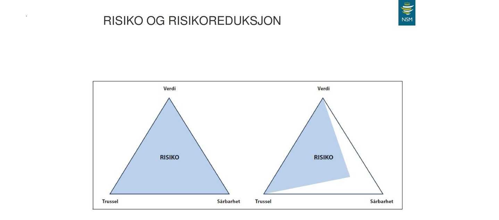

Digitaliseringa har endra verda rundt oss. Mange prosessar er no blitt effektiviserte og krev ikkje lengre manuelt arbeid, men samtidig har me blitt sårbare for nye typar angrep i det digitale rom. Sidan me no er avhengige av digitale tenester, er det viktig at det er god fokus på digital sikkerheit.
Verdikjeder i det digitale rom kallar me digitale verdikjeder. Dersom eit ledd i ei verdikjede ikkje verkar slik den skal, vil det ikkje være mogleg å kommunisere gjennom denne verdikjeda.
Risikotrekanten visar samanhengen mellom trussel, sårbarheit og verdi. I verkelegheita kan ein lommetjuv vere ein trussel, mens i det digitale rom kan ein hacker vere ein trussel.